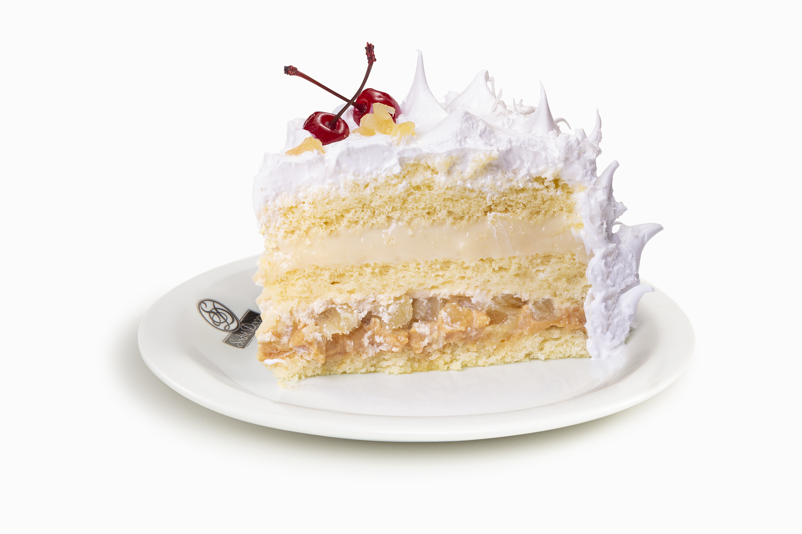

Bolos e confeitos
Bolo de Abacaxi
Para preparar um bolo você deve, bater os ovos junto com a farinha, adicionar leite, adicionar fermento e levar ao forno por alguns minutos.
Ingredientes
- Ovos
- Leite
- Farinha de Trigo
- Abacaxi
- Leite Condensado
- Coloque a farinha em um recipiente
- Adicione os ovos
- Adicione o leite
- Bata até virar uma mistura homogênea
- Faça uma calda de abacaxi
- Adicione o leite condensado à calda
- Cubra o bolo com chantily
